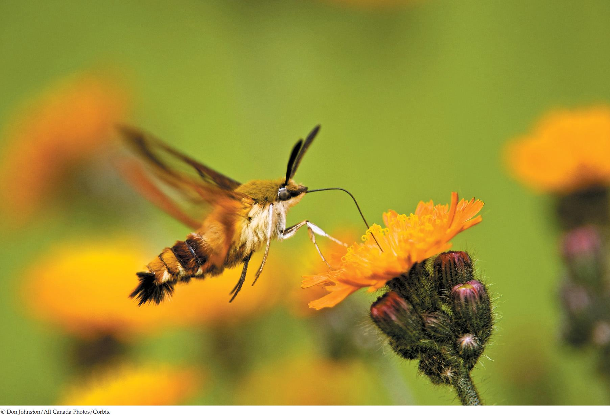

| 33 | Muscle and Movement |
|
KEY CONCEPTS
33.1 Muscle Cells Develop Forces by Means of Cycles of Protein–Protein Interaction 33.2 Skeletal Muscles Pull on Skeletal Elements to Produce Useful Movements 33.3 Skeletal Muscle Performance Depends on ATP Supply, Cell Type, and Training 33.4 Many Distinctive Types of Muscle Have Evolved |

A sphinx moth (Hemaris thysbe) uses its flight muscles to hover at a flower, collecting nectar with its long proboscis.
|
This moth, a type of sphinx or hawk moth, is sometimes mistaken for a hummingbird, accounting for its name, the hummingbird clearwing moth (Hemaris thysbe). Common in several parts of the United States and Canada, it feeds during daylight by hovering at flowers using rapid wingstrokes driven by the flight muscles in its thorax. It has a strikingly long proboscis that it can insert deeply into flowers to collect nectar. Other species of sphinx moth also have a striking proboscis, the most amazing being that of the famous Madagascar sphinx moth we mentioned at the start of Chapter 21. The hummingbird clearwing moth buzzes as it hovers because of the rapid movements of its flight apparatus.
Insects probably first took to the air about 350 million years ago. Over that long evolutionary time, diverse forms of flight have evolved, from the relatively slow and silent up-and-down wingstrokes of many butterflies, to the high-frequency buzzing wingstrokes of sphinx moths, to the very high frequency whining wingstrokes of mosquitoes. Today, engineers are studying insects to learn more about the aerodynamics of flight. Sphinx moths are of particular interest because they are powerful fliers that can quickly alternate between hovering and flying straight ahead at high speeds.
Muscle cells—one of the defining properties of animals—develop forces by means of interactions among fiber-like, contractile proteins within the cells. These forces typically set matter in motion. For example, the forces developed by the flight muscles of an insect set the wings in motion. For matter to be set in motion, an energy source is required. Insect flight-muscle proteins draw the necessary energy from adenosine triphosphate (ATP) made by the mitochondria in the muscle cells.
The great majority of muscle cells in the animal kingdom require a nerve impulse to activate each contraction: contractions and nerve impulses occur in a 1:1 ratio. Sphinx moths draw the interest of muscle physiologists because they are among the animals that have the highest frequencies of muscle contraction during flight while retaining this 1:1 ratio. Their wingstrokes can number more than 30 per second (30 Hz).
Per gram, insect flight muscle stands out as one of the tissues that attain the highest known rates of oxygen consumption. Physiologists reason that if high mechanical power generation is critical for ecological success—as it certainly is in powerfully flying insects—natural selection will have favored the evolution of muscle cells that have exceptional capacities to use O2 to produce ATP to power muscle contraction. Electron micrographs of insect flight muscle show cells that are literally packed with contractile proteins and mitochondria.
Why is it likely that available space inside cells has limited the contents of contractile proteins and mitochondria in high-performance muscles?